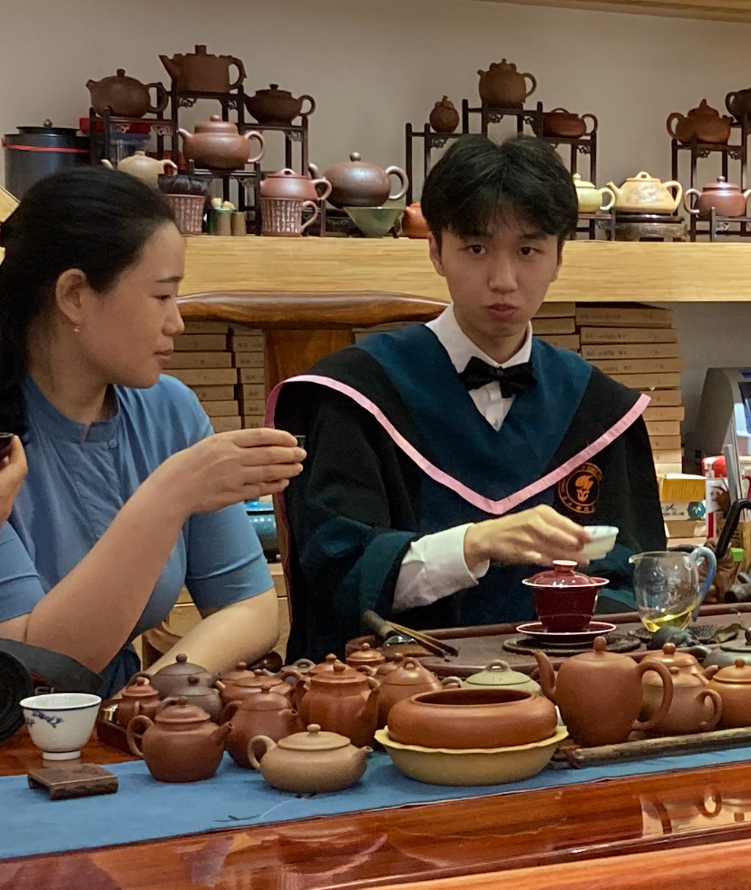

[main]Jack Yansong Li's Website
[main]Jack Yansong Li's Website
 [main]Jack Yansong Li's Website
[main]Jack Yansong Li's Website
 |
I am a Ph.D. candidate in the Electrical and Computer Engineering Department at the University of Illinois Chicago. I am very fortunate to be advised by Prof. Shuo Han. I received my bachelors in Department of Mathematics at the Southern University of Science and Technology.
My primary research interests lie in reinforcement learning and game theory. Currently, I am working on combining model-based RL with model-free RL. Previously, I have worked on projects that examines optimization techniques for Stackelberg games.
This website is built in GNU TeXmacs/Mogan with the notes plugin, you can access the source repository by clicking: Mogan and texmacs-notes.
I am currently seeking a Post-Doctoral position or an Assistant Professor position. Below, I have attached my CV and statements outlining. I welcome any opportunities that align with my expertise and interests. Please feel free to contact me if you are aware of any positions or opportunities. I would be delighted to discuss how my skills and experiences can contribute to your team or institution:
[Curriculum Vitae] [Research Statement]
[Teaching Statement] [Diversity Statement]
On this website, I've shared some notes from my Ph.D. journey. If you encounter any problems or spot any inaccuracies in the notes, please don't hesitate to reach out to me. You can email me at yli340@uic.edu. For a complete list of all the notes I've published here, please refer to here.
I am a co-founder of LIII NETWORK (三鲤网络), an open source company that developes:
GNU TeXmacs/Mogan: I am one of the maintainers of GNU TeXmacs/Mogan: a WYSIWYG TeX-like editor that can help users type equations 10 times faster than LaTeX. See “A quick tour of TeXmacs” for a 3 mins short introduction.
Goldfish Scheme: I am one of the maintainers of Goldfish Scheme, a Scheme interpreter based on S7 Scheme and C++. This interpreter matches the speed and simplicity of S7, while offering improved support for the Microsoft Windows. In Goldfish Scheme, we have implemented the complete set of features from R7RS and included many functionalities inspired by the Python standard library. Goldfish Scheme will be the foundation for GNU TeXmacs/Mogan in the future.
All my publications are available as open access on Google Scholar: Yansong Li's Google Scholar. Feel free to email me if you have any questions for my work or seek for collaboration. I am open to all collaboration opportunities.
| Sep 2024 | Manuscript: “Generalizing End-To-End Autonomous Driving In Real-World Environments Using Zero-Shot LLMs”. |
| Accepted for publication in the 8th Annual Conference on Robot Learning. | |
| Mar 2024 | Extended abstract: “Efficient Collaboration with Unknown Agents: Ignoring Similar Agents without Checking Similarity”. |
| Accepted for publication as extended abstract in the Proc. of the 23rd International Conference on Autonomous Agents and Multiagent Systems (AAMAS 2024). | |
| Mar 2023 | Manuscript: “Solving Strongly Convex and Smooth Stackelberg Games Without Modeling the Follower”. |
| Accepted for publication in the American Control Conference (ACC) 2023. [IEEE Xplore] | |
| June 2022 | Manuscript: “Accelerating Model-Free Policy Optimization Using Model-Based Gradient: A Composite Optimization Perspective”. |
| Accepted for publication in the Proceedings of The 4th Annual Learning for Dynamics and Control Conference. [PMLR] |